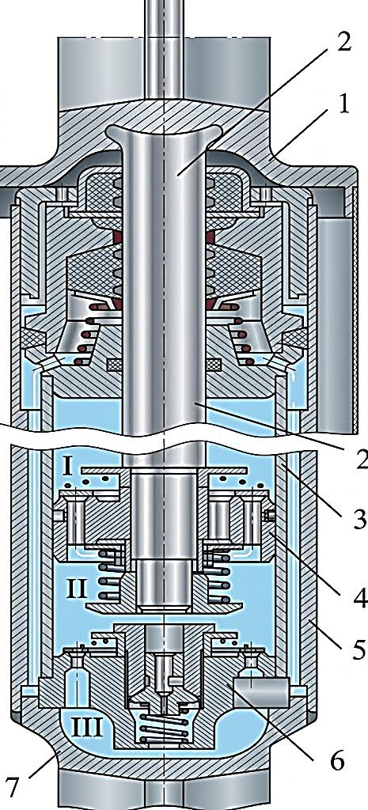
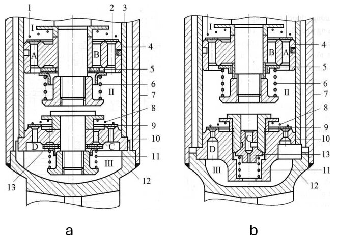
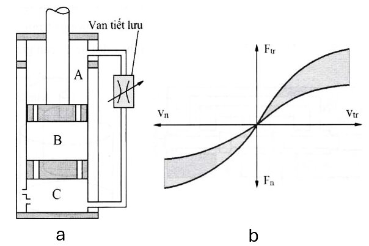
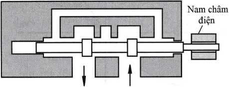
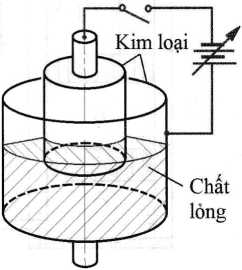

Hình 11.40 thể hiện bản vẽ mặt cắt của giảm chấn ống thủy lực hai chiều không đối xứng loại có hai lớp vỏ. Đế trên 1 được bắt với khung xe, đế được bắt chặt với cần pit tông 2 (bằng cách tán như trên hình vẽ). Pit tông 4 được lắp chặt với cần 2 và được lắp vào vỏ trong 3 của giảm chấn. Đầu dưới của vỏ trong 3 được lắp chặt với đế van 6, đầu trên được lắp các bộ phận làm kín. Vỏ trong 3 được lồng vào trong vỏ ngoài 5. Vỏ ngoài 5 được lắp chặt với đế dưới 7 (bằng cách hàn) và đế dưới được lắp với bánh xe (hoặc cầu xe). Với cấu tạo như vậy giảm chấn sẽ có 3 buồng làm việc: buồng I được ngăn cách bởi vỏ trong 2, pit tông 4 và phần làm kín phía trên vỏ trong; buồng II được ngăn cách bởi vỏ trong 3, pit tông 4 và đế van 6; buồng III bao gồm không gian dưới đế van 6 và không gian nằm giữa vỏ trong và vỏ ngoài.

Hình 11.40. Giảm chấn kiểu ống kép
1- Tai trên; 2- Cần pit tông; 3- Vỏ trong; 4- Pit tông; 5- Vỏ ngoài; 6- Đế van; 7- Tai dưới
Sở dĩ cần phải có buồng III là vì thể tích buồng I và II không bằng nhau: buồng I có cần 2 chiếm chỗ, còn buồng II không có. Vì thế, người ta gọi buồng (khoang) III là khoang bù.

Hình 11.41. Các van giảm chấn
A- Lỗ van nén nhẹ; B- Lỗ van trả mạnh; C- Lỗ van nén mạnh; D- Lỗ van trả nhẹ.
1- Lò xo van nén nhẹ; 2- Nắp van nén nhẹ; 3- Vỏ trong; 4- Pit tông; 5- Nắp van trả mạnh; 6- Lò xo van trả mạnh; 7- Vỏ ngoài; 8- Lò xo van trả nhẹ; 9- Nắp van trả nhẹ; 10- Đế van; 11- Lò xo van nén mạnh; 12- Tai dưới; 13- Nắp van nén mạnh.
Trên hình 11.41 thể hiện cấu tạo các van của giảm chấn. Ở hành trình nén khi Vn ≤ Vn1 được gọi là hành trình nén nhẹ; khi Vn > Vn1 được gọi là hành trình nén mạnh. Tương tự ở hành trình trả khi Vtr ≤ Vtr1 được gọi là hành trình trả nhẹ; khi Vtr > Vtr1 được gọi là hành trình trả mạnh. Ở hành trình nén nhẹ chỉ có van nén nhẹ mở, ở hành trình nén mạnh các van nén nhẹ và nén mạnh mở, tương tự ở hành trình trả nhẹ chỉ có van trả nhẹ mở, ở hành trình trả mạnh các van trả nhẹ và trả mạnh mở. Van nén mạnh còn được gọi là van giảm tải hành trình nén và tương tự van trả mạnh còn được gọi là van giảm tải hành trình trả.
Trên hình 11.41 các lỗ A trên pit tông 4 là các lỗ van nén nhẹ, được đậy bằng nắp van 2 và được giữ bởi lò xo 1. Các lỗ D là lỗ van trả nhẹ, được đậy bằng nắp van 9 và được giữ bởi lò xo 8. Lò xo 1 và 8 có độ cứng nhỏ. Các lỗ C là lỗ van nén mạnh, hình 11.41a các lỗ van c được đậy bằng nắp van 13 và được giữ bởi lò xo 11, hình 11.41b lỗ C nằm trên thân van 13, thân van 13 được giữ bởi lò xo 11. Các lò xo 11 được tính toán sao cho khi vận tốc pit tông 4 lớn hơn 0,3 m/s thì áp lực chất lỏng đủ nén các lò xo lại để mở van nén mạnh. Các lỗ B là các lỗ van trả mạnh, được đậy bởi nắp van 5 và được giữ bởi lò xo 6. Tương tự như van nén mạnh, các lò xo 6 được tính toán sao cho khi vận tốc pit tông 4 lớn hơn 0,3 m/s thì áp lực chất lỏng đủ nén các lò xo lại để mở van trả mạnh. Các van nén mạnh và trả mạnh có đặc điểm là không đóng hoàn toàn. Trên hình 11.41a, các nắp van 5 và 13 có dạng hình “hoa khế” do đó đóng không kín hoàn toàn. Tương tự trên hình 11.41b, nắp van 5 có khe hở giữa nắp van và ống bạc, còn thân van 13 có lỗ nhỏ giữa tâm thân van.
Giảm chấn làm việc như sau:
Hành trình nén nhẹ: pit tông 4 đi xuống với vận tốc nhỏ hơn 3 m/s. áp suất chất lỏng ở buồng II tăng lên, áp suất buồng I giảm, lò xo 1 bị nén lại, mở van nén nhẹ. chất lỏng đi qua lỗ A đi lên buồng I. Đồng thời một phần nhỏ chất lỏng từ buồng II cũng đi qua khe hở của van trả mạnh đi lên buồng I và đi qua khe hở ở van nén mạnh đi xuống buồng III.
Hành trình nén mạnh: pit tông 3 đi xuống với vận tốc lớn hơn 3 m/s, chất lỏng tiếp tục đi như hành trình nén nhẹ. Mặt khác, do áp suất chất lỏng ở buồng II tăng mạnh đủ để nén lò xo 11 mở thêm van nén mạnh, chất lỏng từ buồng II đi qua lỗ C xuống buồng III. Do diện tích lưu thông tăng lên nên hành trình nén mạnh hệ số cản giảm chấn giảm đi so với hành trình nén nhẹ.
Hành trình trả nhẹ: pit tông 4 đi lên với vận tốc nhỏ hơn 3 m/s, áp suất chất lỏng ở buồng II giảm, lò xo 8 bị nén lại, mở van trả nhẹ, chất lỏng từ buồng III đi qua lỗ D đi lên buồng II. Đồng thời một phần nhỏ chất lỏng từ buồng I cũng đi qua khe hở của van trả mạnh đi xuống buồng II và từ buồng III đi qua khe hở ở van nén mạnh đi lên buồng II.
Hành trình trả mạnh: pit tông 4 đi lên với vận tốc lớn hơn 3 m/s, chất lỏng tiếp tục đi như hành trình trả nhẹ. Mặt khác, do áp suất chất lỏng ở buồng II giảm mạnh và áp suất buồng I tăng mạnh đủ để nén lò xo 6 mở thêm van trả mạnh, chất lỏng từ buồng I đi qua lỗ B xuống buồng II. Do diện tích lưu thông tăng lên nên hành trình trả mạnh hệ số cản giảm chấn giảm đi so với hành trình trả nhẹ.
a. Điều chỉnh hệ số cản giảm chấn
Đặc trưng của giảm chấn là hệ số cản giảm chấn. Độ êm dịu của xe phụ thuộc vào độ cứng của bộ phận đàn hồi và độ cản của giảm chấn. Mỗi một điều kiện vận hành đòi hỏi một độ cản giảm chấn nhất định, ví dụ: tải trọng lên hệ thống treo lớn đòi hỏi độ cản giảm chấn lớn. Trên các xe truyền thống, độ cản giảm chấn không thay đổi do đó xe chỉ êm dịu trong điều kiện vận hành nhất định. Để đảm bảo xe êm dịu trong các điều kiện vận hành khác nhau, giảm chấn phải thay đổi được hệ số cản.

Hình 11.42. Giảm chấn thay đổi hệ số cản
a)- Sơ đồ kết cấu; b)- Đường đặc tính.
Hệ số cản giảm chấn phụ thuộc hai yếu tố sau đây:
-
Diện tích lưu thông của các lỗ van giữa các khoang;
-
Độ nhớt của chất lỏng trong giảm chấn.
-
Dựa vào đó có thể làm thay đổi hệ số cản giảm chấn bằng cách thay đổi diện tích lưu thông giữa các khoang của giảm chấn và thay đổi độ nhớt của chất lỏng trong giảm chấn.
b. Điều chỉnh hệ số cản giảm chấn bằng cách thay đổi diện tích lưu thông giữa các khoang giảm chấn

Hình 11.43. Sơ đồ kết cấu van điện từ
Hình 11.42.a là sơ đồ kết cấu của giảm chấn điều chỉnh hệ số cản bằng việc thay đổi diện tích lưu thông giữa các khoang. Giảm chấn này được bố trí thêm một đường lưu thông từ khoang A sang khoang C qua một van tiết lưu điều chỉnh được. Việc thay đổi diện tích lưu thông được thực hiện bằng cách thay đổi diện tích lưu thông của van tiết lưu. Hình 11.42.b là đường đặc tính của giảm chấn. Nếu van tiết lưu chỉ có hai vị trí: Vị trí “off’ van đóng hoàn toàn, vị trí “on” van mở hoàn toàn thì đặc tính của van có hai đường ứng với hai vị trí của van. Nếu van tiết lưu có thể điều khiển được nhiều vị trí thì đặc tính của giảm chấn có một họ đường. Hình 11.43 thể hiện kết cấu van điều khiển được diện tích lưu thông bằng điện từ. Dòng điện đi đến nam châm điện để làm dịch chuyển con trượt của van được điều khiển bởi ECU.
c. Điều chỉnh hệ số cản bằng cách thay đổi độ nhớt chất lỏng trong giảm chấn

Hình 11.44. Cách tạo điện trường trong giảm chấn
Độ nhớt của chất lỏng ảnh hưởng trực tiếp đến hệ số cản giảm chấn. Độ nhớt cản cao, hệ số cản giảm chấn cản lớn và ngược lại. Một số loại chất lỏng có độ nhớt nhạy cảm với một số tác nhân như điện trường, từ trường. Khi chất lỏng này ở trong vùng có điện trường hoặc từ trường thì độ nhớt của chất lỏng sẽ thay đổi khi cường độ của từ trường (hoặc điện trường) thay đổi. Người ta sử dụng đặc tính này của chất lỏng để tạo ra giảm chấn thay đổi được hệ số cản bằng cách tạo ra điện trường (hoặc từ trường) trong giảm chấn và thay đổi cường độ điện trường (hoặc từ trường) khi muốn thay đổi hệ số cản giảm chấn.
Hình 11.44 thể hiện cách người ta tạo ra điện trường có thể thay đổi được cường độ trong môi trường chất lỏng. Khi thay đổi hiệu điện thế của nguồn điện sẽ làm thay đổi cường độ điện trường trong chất lỏng và như thế sẽ làm thay đổi độ nhớt chất lỏng. Nguyên lý này có thể ứng dụng để chế tạo giảm chấn thay đổi được hệ số cản giảm chấn bằng cách thay đổi độ nhớt giảm chấn.